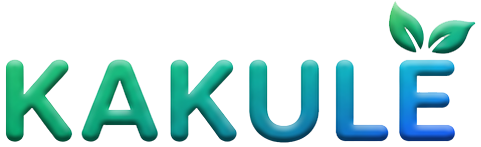
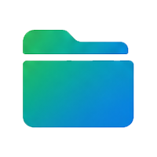

Sadece ailenize özel, kapalı sohbet
Soldaki listeden bir aile üyesi veya grup seçerek sohbete başla.
Bu kodu sadece davet etmek istediğin kişiyle paylaş. Kod, hesap oluşturulunca otomatik geçersiz olur.
Hesap işlemleri
Mevcut e-posta:
Bu işlem geri alınamaz. Profilin silinir, sohbetlerden adın kalkar. Gönderdiğin mesajlar sohbetlerde "silindi" olarak görünür.
Uygulamanın atmosferini seç. Her tema aynı sıcaklığın koyu ve açık tonlarını sunar.

Yedekleme ve Geri YüklemeÜyesi olduğun tüm sohbetleri, mesajları ve medyayı tek bir .zip dosyası olarak indirebilirsin. Bu dosyayı Google Drive'a, e-postana veya güvenli bir yere saklayıp istediğin zaman geri açabilir, farklı bir cihazda okuyabilirsin.
Hazırlanıyor…
Bir yedeği geri yükle / görüntüle
Daha önce oluşturduğun bir .zip yedeği seç; içeriğini okuma modunda (salt-okunur arşiv görüntüleyici) açar. Sohbetlerin zaten bulutta durduğu için yeni telefonda giriş yapman geçmişi otomatik getirir; bu görüntüleyici, silinmiş ya da arşivlenmiş bir kopyayı okumak içindir.
SOS butonuna bastığında, seçtiğin kişilere aşağıdaki mesaj ve o anki konumun otomatik olarak gönderilir.
📍 Anlık konumun da otomatik olarak paylaşılacak.
24 saat sonra otomatik kaybolur.
İletilecek sohbet(ler)i seç.
Karşı tarafa bir buluşma çağrısı gönderilecek. Kabul edenler haritada canlı olarak belirir; birbirinize yaklaştıkça aradaki mesafe erir. Konumun yalnızca bu ekran açıkken paylaşılır — kapattığında paylaşım anında durur.